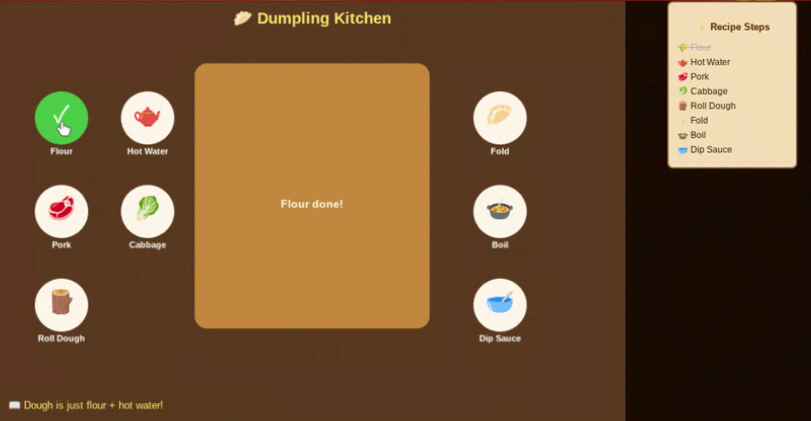

My freedom project was a year-long project where I was tasked to choose a third-party JavaScript tool and use it to build something of my own choice.
I chose Phaser 3, a game development library, and decided to make an educational cooking game centered around Chinese dumplings.
The idea was to combine something I grew up eating but never really knew how to make with a format that actually made the information stick: a game.
I made Dumpling Kitchen, a Phaser 3 game where the player clicks through 8 ingredients in a dumpling recipe one by one. Each click turns the ingredient circle green, updates a fun fact at the bottom of the screen, crosses off the step in a checklist on the right side of the page, and updates the message on the cutting board in the middle.
Once all 8 ingredients are clicked, a win screen appears with a Play Again button that fully resets the game.
The game is split across three files: index.html sets up the page structure, style.css handles the checklist sidebar, and main.js contains all the Phaser code. All 8 ingredients are stored in one array and a single makeButton function handles all of them through a loop, rather than writing separate code for each one. The project used this.add.graphics() for the cutting board, setinteractive() for the ingredient buttons, and scene.time.delayedCall( for the win screen timing.
My project had two main challenges: one with the code, and one with how I planned the project overall.
The first challenge was getting a single click to trigger multiple things at once. When a player clicks an ingredient, it has to turn the circle green, swap the emoji to a tick, update two Phaser text objects, and cross off the HTML checklist item on the right side, all from one pointerdown event. The tricky part was that Phaser controls the canvas but the checklist is plain HTML, so one click had to cross two completely different systems. I also ran into a double-click bug early on where clicking the same circle twice broke the done counter. Both got fixed once I understood that setting circle.input.enabled = false immediately on the first click stops anything from firing twice, and that a single click handler can contain as many lines as needed.
The second challenge was time management. Going in I was ambitious and planned three full levels with different recipes for easy, medium, and hard difficulty. I only finished one. The game is complete and fully working, but I never got to the other two levels. Looking back, I should have planned for one thing, done it well, and only added more if time actually allowed for it.
The biggest thing I learned is that the more ambitious you want to be, the more time you actually need to set aside. I had enough time to build a solid MVP, but there were features I wanted like enforcing ingredient order, a timer, and the second and third recipe levels that I never got to. At the same time, finishing one thing well felt better than rushing through three things half done.
I also got a lot more comfortable reading documentation through this project. Phaser's docs don't walk you through anything step by step you read a concept, guess at how it works, test it, and adjust. That felt frustrating at first but it's actually how real developers use docs, and I feel much more confident with that process now than I was at the start of the year.
This was particularly important when dealing with the responsive design issues. Instead of getting frustrated, I learned to break down each problem into smaller, more manageable parts and tackle them one by one. Using grid system, I was able to structure the content more effectively, ensuring that everything resized properly on different screen sizes. The grid system made it far easier to create a flexible layout that adjusted automatically to screen sizes.
If I were to continue this project, the first thing I'd add is an order requirement so the player has to click ingredients in the correct recipe sequence. Clicking the wrong one would show a red message like "That's not next!" which would make it feel like a real challenge instead of just a clickable checklist. After that I'd add a timer and score, and eventually build out the medium and hard levels with fried rice and spring rolls as I originally planned.
Preview